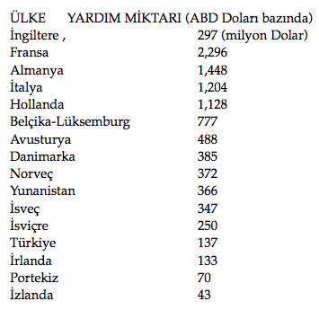

İKİNCİ DÜNYA SAVAŞI SONRASI DÖNEMDE ABD’NİN HÂKİMİYET ÇABALARI
İkinci büyük paylaşım savaşının askeri cephede kazanılmış olması tek başına yeterli görünmemekteydi. ABD’nin şimdiki amacı, politik ve ekonomik dengeleri kendi lehine çevireceği planlarını yürürlüğe sokmaktı. Savaş boyunca Sovyetlerle oluşan zoraki işbirliği sona ermiş, köşe başlarını kapmak için amansız bir mücadele başlamıştı.
Gizli servisler aracılığıyla yürütülen operasyonlar çağı başlamıştı. Dünyanın geri kalmış bölgelerinde Sovyet propaganda ve halk hareketleri iktidarları sarsmaya başlamışken, ABD’nin hareket alanı daralmaktaydı. İşte bu daralmanın önüne geçebilecek gizli planlar tek tek gün yüzüne çıkmaya başladı. Dünyanın yeni durumu da İkinci Büyük Savaş’tan geri kalmıyordu: Tüm kıtalarda iç savaşlar, ayaklanmalar, katliamlar ve yoksulluk salgın gibi yayılmaktaydı.
Truman’ın Komünizm Karşıtı Doktrini
1947 yılında ABD Başkanı Harry Truman tarafından Sovyet tehdidine karşı hazırlanmış ve ‘Truman Doktrini’ adıyla anılan politik plandır. Truman Doktrini, ABD’nin uluslararası politikalarının değiştiğini ve Sovyet düşmanlığının bu yeni politikada temel nokta olduğunu ilan etmiştir. Bu doktrin ile ABD iktidarı “komünizm tehdidi”ne maruz kalan devletlere mali ve askeri yardım yapacağını açıklamıştır.
Başkan Truman, 12 Mart 1947 tarihinde ABD kongresinde bu doktrini açıkladı. Başkan Truman’a göre Amerika, komünizme karşı silahlı mücadele veren ve dış ülkelerin baskısı altında bulunan devletlere parasal ve askeri yardım yapmalıydı. Bu amaçla Kongre’den 400 milyon dolar kullanma izni istedi. Kongre’nin 22 Mayıs’ta bu isteğini kabul etmesi üzerine, Türkiye’ye 100 milyon, Yunanistan’a ise 300 milyon dolar yardım yapıldı.
Truman Doktrini’ni hızlandıran başlıca neden, Sovyetler’in güneye doğru yayılmasıdır. Yunanistan’da komünist gerillalarla zayıf merkezi hükümet arasında başlayan iç savaş, Truman Doktrini’nin ilan edilmesini hızlandırmıştır. Ayrıca Sovyetler’in Türkiye’den toprak ve Boğazlar’da ortak savunma antlaşması istemesi ve bu amaçla Türkiye’ye baskı yapması, diğer hızlandırıcı nedenlerdir.
Almanya’nın çöküşü, II. Dünya Savaşı boyunca bastırılmış düşmanlıkları tekrar su yüzüne çıkardı. Almanya’ya karşı Sovyetlerle ittifak kurmuş olan Amerika ve İngiltere, Bolşevik Devrimi’nin ilk günlerinden beri komünizme düşmanlardı. Hatta başta İngiltere olmak üzere İtilaf Devletleri, Birinci Dünya Savaşı bittikten sonra Bolşeviklerle mücadele eden Çarlık yanlısı Rusları desteklemiş ve bu amaçla Vladivostok, Murmansk ve Archangelsk limanlarına asker çıkarmışlardı.
ABD’nin Nagasaki ve Osaka’ya attığı atom bombaları Japonya’nın teslimiyetine yol açarken, aynı zamanda Amerika’nın askeri üstünlüğünü de gözler önüne serdi. Bu iki saldırıyı Sovyetler’e yönelmiş bir tehdit olarak algılayan Stalin, Batı ile arasında kendisine bağlı uydu devletler kurarak bir “tampon bölge” oluşturmak istiyordu. Bu ilke Sovyetler’in savaş sonrasında Doğu Avrupa politikasının temelini oluşturmuştur. Bu amaçla Sovyetler’in kendi ideolojisini yaymaya çalışması ve Doğu Avrupa’da komünist uydu-devletler kurmaya başlaması, Amerika’da büyük bir paniğe neden olmuştu. Bu yüzden 1947’den itibaren ABD dış politikasının temel öğesi komünizmle mücadele olmuştur.
Truman Doktrini’nin en önemli sonucu, Yunan İç Savaşı’nın seyrini değiştirip, merkezi hükümetin komünistleri yenmesini sağlamış olmasıdır. Böylece Soğuk Savaş’taki ilk silahlı mücadelelerden birinden Batı Bloku savaşı kazanarak çıkmış oluyordu.
Truman Doktrini, kendisinin ardından gelecek olan Marshall Planı’na öncülük etmiş ve doktrinin başarısı Marshall Planı’na da uygulama alanı açmıştır. Doktrin, yeryüzünün iki kutba ayrıldığını ve SSCB-ABD mücadelesinin başladığını ilan etmiştir. Buna ek olarak, Amerika, II. Dünya Savaşı nedeniyle ekonomisi bitme noktasına gelmiş olan İngiltere’nin bölgeden çekilmesiyle oluşan boşluğu dolduruyor, böylece Sovyetler’in güneye doğru yayılmasını engellemiş oluyordu.
ABD, dünya ölçeğindeki alışılmış dış politikasını değiştiriyor ve I. Dünya Savaşı sonundaki dışa kapalı tavrının aksine, küresel siyaset içerisinde aktif bir rol üstlenme ye başlıyordu. Bu siyasetin genel çizgileriyse İngiltere’nin eski kolonyalist-sömürgeci politikasının revize edilmiş bir yansımasından başka bir şey değildi. Dünyaya özgürlük propagandası yaparken bir yandan da sosyal mücadeleleri engellemek amaçlı gizli örgütler kuruyor; para piyasalarında tartışılmaz bir kontrol sağlanarak, Sovyet bloğu dışında kalan ülkeleri ekonomik açıdan kontrol altına almaya çalışıyor; paranın yetmediği yerde paramiliter güçler oluşturarak iç savaşlar ve darbeler organize ediyordu.
İşte Amerika’nın Truman Doktrini ile dünyaya vaat ettiği şey buydu: Baskı, toplu katliamlar, yoksulluk ve iç savaşlar...
Bu dönemin ikinci yayılma planıysa Truman Doktrini’nin takipçisi niteliğindeki Marshall Planı’ydı. Bu planı özel kılan şeyse ABD’nin Türkiye’yi sınır karakolu yapma planlarını içeren ilk plan olmasıdır.
Marshall Planı
George Catlett Marshall’ın İkinci Dünya Savaşı’nın ardından Avrupa ülkelerinin ekonomisinin yeniden kurulması için hazırladığı yardım planıdır. Plan dünyaya “fakirlik, umutsuzluk, kaos ve açlığa karşı yardım planı” olarak sunulsa da bunun Sovyet etkisini kırmak için hazırlanmış politik bir manevra olduğu herkesçe malumdur. Planı uygulamaya sokan Amerika’nın hedeflerini şöyle sıralamak mümkündür: Ekonomik ve sosyal bazda büyük bir kriz yaşayan Avrupa’ya yardım ederek kapitalist ekonominin yeniden işlerliğe kavuşmasını sağlamak; Amerikan mallarının ihracatını kolaylaştırmak ve Sovyet yanlısı güçlerin Avrupa’ya yayılmasını engellemek.
Marshall planı, 1948 yılında başkan Truman tarafından imzalanan bir kanunla kabul edildi. Program dört yıllık bir süreyi kapsamaktaydı. Program çerçevesinde yapılan yardımlara da “Marshall Yardımları” denmektedir. ABD, yardımları karşılığında Avrupa ülkelerinden ekonomik ve mali bağımsızlıklarını artıracak yönde çaba göstermelerini, bu amaçla gerekli iç önlemleri almalarını ve aralarında yakın bir işbirliği gerçekleştirmelerini istiyordu. Böylece Avrupa ülkelerinin ABD’ye bağımlılıkları da azaltılmış olacaktı. Avrupa onarım programının uygulandığı dört yıllık süre içerisinde ABD, Avrupa’ya 11.4 milyar dolar yardım yaptı, bunun % 90’ı doğrudan hibe şeklindeydi. En fazla yardım alan ülkeler İngiltere (% 24), Fransa (% 20), Federal Almanya (% 11) ve İtalya (% 10) idi.
12 Temmuz’da İngiltere, Fransa, Belçika, İtalya, Portekiz, İrlanda, Yunanistan, Türkiye, Hollanda, Lüksemburg, İsviçre, İzlanda, Avusturya, Norveç, Danimarka ve İsveç’in katılmasıyla toplanan 16’lar Konferansı, 22 Eylül’de Amerika’ya sunulmak üzere bir Avrupa Ekonomik Kalkınma Programı hazırladı. Bu program üzerine Amerika, 3 Nisan 1948’de Dış Yardım Kanunu’nu çıkardı. Amerika, bu kanuna dayanarak daha ilk yılında 16’lara 6 milyar dolarlık bir ekonomik yardım yaptı. Bu yardımlar daha sonraki yıllarda da devam edecekti.
ABD’nin yardım teklifi götürdüğü Avrupa ülkelerinden 16’sı yardımı kabul etmiş; SSCB ve güdümündeki Doğu Avrupa ülkeleri yardımı kabul etmemiştir. Dönemin SSCB Komünist Parti Genel Sekreteri Stalin planı bir kandırmaca olarak değerlendirmiş ve tartışmaya bile gerek görmeksizin plana katılmayı reddetmiştir. ABD plan çerçevesinde 20 milyar dolarlık bir yardım hazırlamış, bu paranın paylaşımını organize etmek için de Avrupa Ekonomik İşbirliği Örgütü kurulmuştur. ABD’nin politik hedeflerine giden yolu açan Marshall Planı, ABD’nin öngördüğü politik hedeflerine de ulaşmıştır: Avrupa savaş sonrası neredeyse yok olan ekonomik dengelerine yeniden ulaşmış, piyasa ekonomisi Avrupa’daki tabanını güçlendirmiş ve komünizm akımı Doğu Avrupa sınırları içerisinde kalmıştır.
Yardım planı çerçevesinde Türkiye’ye de 1948-1952 yılları arasında 351 milyon 700 bin Amerikan Doları “yardım” yapılmıştır. Özellikle Menderes döneminde gözlenen Amerikan yanlısı politikaların meyvesi de böylece alınmış oluyor, gitgide gerilen dünya politikası içerisinde, düşman kardeşler Türk ve Yunan devletleri belki de yıllardır ilk kez bir konuda hemfikir olarak, Amerika’nın koruyucu kanatları arasına giriyorlardı.
O yıllarda, yoğun biçimde körüklenen komünizm düşmanlığı ve gericileştirme çabaları neredeyse resmi kurumlar aracılığıyla yürütülüyor, ülkenin farklı yerlerinde komünist avları düzenleniyor; azınlıklar ve toplumsal adalet isteyen halk kesimleri baskı ve kovuşturmalar aracılığıyla susturulmaya çalışıyordu. Ülkede kapitalizm ve emperyalizm karşıtlığını dillendiren her insan ve kuruluş çeşitli saldırıların ve karalama kampanyalarının hedefi haline getirilerek “vatan haini” ilan ediliyordu. İşte bu cadı avına belki de en belirgin başlangıcı veren Marshall Planı olmuştur. İki büyük dünya savaşı ve bir bağımsızlık savaşından yoksulluk, harap olmuş bir ülke ve yoğun bir tarım nüfusuyla çıkmış olan Türk devleti, kaçınılmaz olarak galiplerin yanındaki yerini almıştır.
Hiç şüphesiz, 20. yüzyılın ortasından bugünlere kadar geçen süre, Amerika Birleşik Devletleri’nin neredeyse her alandaki hâkimiyeti altında geçmiştir. Hatta birçok kişi içinde bulunduğumuz dönemi “Amerikan Yüzyılı” adıyla tanımlamıştır. Her ne kadar SSCB 20. yüzyılın ilk yarısında ABD’ye karşı bir denge unsuru olduysa da 1980’lerin sonundan itibaren ABD hegemonyası neredeyse tüm dünya üzerinde kurulmuştur.
21. yüzyıla geldiğimizdeyse, Avrupa Birliği sadece ekonomik bir “birlik” olmaktan çıkmış; birleşik bir devlet yapısı altında bir federal devlet olma yolunda emin adımlarla ilerlemektedir.
Günümüzde ABD’nin karşısına yeni bir güç olarak çıkan Avrupa Birliği’nin temelleri de II. Dünya Savaşı ertesinde yine ABD tarafından hazırlanan Marshall Planı tarafından atılmıştı. Marshall Planı’nın meşhur sloganı olan ve bugünkü AB üyesi ülkeleri hedef alan “Şartlar olursa olsun birlikte hareket etmeliyiz” sloganıyla Avrupa ülkelerine, özellikle Sovyet Bloku’na karşı birlik olma çağrısı yapan ABD, bu birliğin bir gün kendi hegemonyasına rakip çıkacağını pek mümkün görmemişti.
II. Dünya Savaşı’nın ardından Avrupa sanayisi ve ekonomisi tam anlamıyla bir yıkıma uğramıştı. ABD savaşa müdâhil olmuş olsa bile savaşın daha ziyade Avrupa kıtası üzerinde yaşanması nedeniyle, Amerika insani kayıplar dışında kendi topraklarında maddi kayıp ya da yıkım yaşamamıştı. Öte yandan savaş ekonomisi, Amerikan endüstrisinin çarklarını savaş boyunca döndürmüş ve savaş sonrasına da işler durumda olan bir ekonomi bırakmıştı. Avrupa ise ekonomik faktörlerinin neredeyse hepsini amansız savaş esnasında yitirmişti. Yıllar boyunca amansız bir saldırganlıkla süren savaş milyonlarca insanın yok olmasına neden olmuş, savaşın ardından ortaya çıkan ekonomik sorunlar, toplum içerisinde bıkkınlık yaratmıştı. Bu toplumsal bunalım, Avrupa’yı Sovyetler’in komünizm propagandası karşısında zayıf bırakmaktaydı. Bu, kapitalizmi yeniden inşa etme çabasındaki ABD için çok büyük bir tehlikeydi.
Öte yandan, ABD endüstrisi savaş sırasında ulaştığı ve dünya çapında rakipsiz duruma gelen üretim gücünün desteğiyle dış piyasalara, özellikle de Avrupa’ya mal satma planları yapmaktaydı. Avrupalılarsa Amerikan mallarını satın almak istese bile bunun karşılığında verecek yeterli paraya sahip değildi.
Hem Avrupa’nın bu yoksun hali nedeniyle Avrupa’da komünizmin yayılmasından çekinen, hem de Avrupa’ya takviye niyetiyle bağışlanacak olan bu dolarların kendi kasasına geri döneceğini hesap eden ABD, 1947’de düzenlenen bir toplantıda Marshall Planı’nın temellerini atmış, Çekoslovakya’nın 1948 Şubat’ında Sovyetler’e beklenmedik bir şekilde kaybedilişinden iki ay sonra plan resmi olarak yürürlüğe girmişti. Bu arada Yunanistan ve Türkiye’ye, acil yardım adı altında, planın resmiyete dökülmesini beklemeden, Truman Doktrini uyarınca komünizmle mücadele amacıyla 1947 Ocak’ında para yardımları başlatılmıştı bile. Türkiye’ye sağlanan bu yardımlar elbette karşılıksız değildi. ABD’nin Türk-Yunan ikilisinden beklentisi birkaç katmanlı bir paradigmayı içermekteydi. Ortodoks inancı nedeniyle tarihte her zaman Rus Çarlığı’nın yanında yer alan; yaşanan Nazi işgaline karşı ve ardından patlak veren iç savaşta destansı bir mücadele vererek sol güçlerin yardımıyla bağımsızlığını kazanan Yunanistan, bu kez karşısında yükselen Sovyetçi akıma karşı bir set görevini üstlenerek radikal bir değişime yelken açıyordu.
Türkiye içinse, sınır komşusu olduğu ve tarihsel düşmanlığın dostlukla harmanlandığı bu uzun komşuluk ilişkisi, Kurtuluş Savaşı dönemi yaşanan anti-emperyalist yakınlaşmanın ardından bambaşka bir seyir kazanmıştı. İnönü hükümetleri sonrası iktidara gelen ve serbest piyasa ekonomisinin Türkiye ayağını oluşturma misyonunu üstlenen liberal hükümet, Türkiye’ye biçilen sınır korumalığı görevini seve seve üstlenmiş, ülkede komünizm karşıtı dalga hızla yayılmaya başlamıştı. Marshall Planı’nın asıl öngördüğü müdahalelerin başında da zaten bu tip kampanyalar yer almaktaydı. Aşağıdaki listede Marshall Planı dâhilinde her ülkeye ne kadar yardım yapıldığı gösterilmektedir. Anlaşılacağı gibi, Marshall Planı çerçevesinde en büyük yardımı ABD’nin en sadık müttefiki İngiltere almıştır.

Marshall Planı sadece komünizmin yayılmasına karşı bir güvenlik çabası değildir. Aslen Marshall Planı, Bretton Woods Toplantıları’nda ortaya konulan ve ABD’nin hem politik hem de ekonomik hegemonyasını kabul ettirmeye çalışan yeni ekonomik düzenin, diğer adıyla “neo-libera-lizm” çağının önemli bir aşamasıydı. II. Dünya Savaşı sonrası ABD savaştan o kadar güçlü çıkmıştı ki, dünyadaki toplam kömür üretiminin yarısı, petrol üretiminin üçte ikisi ve elektrik üretiminin yarısından fazlasını tek başına yapıyordu. Aynı zamanda, büyük miktarda uçak, otomobil, gemi ve benzeri araç gereçlerin üretim kapasitesine sahipti.
Öte yandan, Amerikan kapitalizmi ne kadar güçlü olursa olsun, müttefikleri ve mallarını satacağı pazarlar olmadan üretimin pek bir anlamı olmazdı. Üstelik hem savaş sonrası geri dönen askerlerin işgücünün piyasaya yeniden katılması sonucu oluşacak dengesizlik, hem de savaş ekonomisinin bitmesi, 1929 ekonomik bunalımında olduğu gibi, ani talep azalmasına neden olacaktı. ABD, sahip olduğu büyük üretim gücü için eşdeğer büyüklükte yeni pazarlar yaratmak zorundaydı. Oysa savaş sırasında tamamen harap olan Avrupa ülkeleri Amerikan mallarını finanse edemiyor ve Amerika’ya karşı verdiği büyük ticari açıkları sonucunda ABD’den yapmış olduğu ithalat sekteye uğruyor ve istenilen düzeye ulaşmıyordu.
Bretton Woods Toplantıları sonucuna göre IMF, Avrupalı ülkelerin ABD’ye yaptığı ödemeler dengesi açığını finanse edecekti. Her ne kadar IMF bu açığı finanse etmeye çalışsa da bu çabalar yeterli olamadı. Mevcut durum Amerikan Doları’nın dünya çapında hem rezerv para birimi,hem de dış ticarette kabul gören bir para birimi olma sürecini yavaşlatıyordu.
Bu durumda, Marshall Planı yürürlüğe konmuş, Avrupa’da yaşanan dolar kıtlığına bu sayede bir son verilmişti. Marshall Planı çerçevesinde Avrupa ekonomisine ilk etapta enjekte edilen para miktarı yaklaşık 13 milyar dolardı. 1947 yılında bu miktar Amerika’nın GSYİH’nin yaklaşık % 5.4’üne tekabül ediyordu. Bugün bu oran yaklaşık olarak 632 milyar dolara denk gelmektedir.
Planın Sonuçları
ABD’nin Avrupa’yı ayağa kaldırma eksenli çabalarını içeren Marshall Planı 1951 yılında sona ermiştir. Yardımları uzatma çabası olsa da Kore Savaşı’nın ABD bütçesine getirdiği maliyet bu çabaları sonuçsuz bırakmıştır. Öte yandan, Marshall Planı netice itibariyle kendi çerçevesi içerisinde başarıya ulaşmıştır. Marshall Planı’nın sonuçlarını şöyle sıralamak mümkündür:
Avrupa ekonomisi tarih boyunca görülmemiş ölçekte bir büyüme göstermiş, 1948-1952 yılları arasında üretimde % 35 artış kaydedilmiştir. Savaştan bitkin çıkan Avrupa’da görülen kıtlık ve yoksulluk ortadan kalkmış, hayat standardı bu yardımları takip eden 30 yıl içerisinde önemli ölçüde yükselmiştir.
Avrupa ülkelerindeki toplumsal gerginlik neredeyse tamamen azaltılmış, ABD’nin öngördüğü politik değişim ve yönelim yaratılmıştır. Bunun sonucunda “komünizm tehlikesi” de engellenmiştir. Gerçekten de savaş esnasında ve savaş sonrası ortaya çıkan komünist partiler, Marshall Planı gereğince yürütülen propaganda faaliyetleri neticesinde popülarite kaybına uğramıştır.
ABD açısından en önemli kazanımlardan birisi şuydu; Bretton Woods Toplantıları’nda ortaya konan plan işlerlik kazanmış, ABD Doları dünyanın büyük kesiminde uluslararası ticarette resmi para birimi olarak kabul görmüştü.
Planın diğer bir sonucu da Avrupa Birliği düşüncesinin temellerinin atılmasıydı. Bu tip bir birlik, serbest ticareti ve dolayısıyla neo-liberalizmi desteklediği için ABD her koşulda Avrupa Birliği fikrini desteklemiştir.
Marshall Planı’nın uygulanmasıyla, 1950 ve 1970 yılları arasında Avrupa umulandan çok daha büyük bir kalkınma göstermiş; 1945-50 arası egemen güç haline gelen ABD’den ithalat yapmaya bile gücü olmayan Avrupa devletleri, 1960’ların ortasından itibaren ABD’ye karşı ticaret fazlası vermeye başlamışlardı.
Plan çerçevesinde sanayileşmenin önünü açmayı hedefleyen Amerika, yardımları sadece parasal bazda değil, aynı zamanda teknoloji ve sanayileşme alt yapısı üzerinden yürütüyordu. Avrupa’nın az gelişmiş ülkelerindeki tarımsal nüfusun azaltılması ve bu nüfusun kentlerdeki endüstriyel sahalara kaydırılması da planın parçalarından birisiydi. Bu sayede örneğin Türkiye ve Yunanistan bu yeni hayat tarzına ve ekonomik yapıya entegre edilecek, ABD’nin öngördüğü yeni tip kapitalizmin ve pazarların oluşturulması bu sayede sağlanacaktı. Kentlerde yoğunlaşan nüfusun endüstriyel ihtiyaçları da elbette Amerikan şirketleri tarafından karşılanacak, böylece savaş sonrası darboğaza giren Amerikan ekonomisi rahat bir soluk alacaktı.
Amerika’nın kurmaya çalıştığı bu yeni sosyoekonomik sistemin karşısına dikilen en büyük engelse şüphesiz Sovyetler Birliği ve onun Sosyalist yörüngesine giren ülkelerdi. ABD’nin oluşturmaya çalıştığı yeni pazarlar ve üretim sistemi her yerde beklenen ilgi ve sempatiyle karşılanmıyordu. Akdeniz’i Marshall Planı ve alt planları sayesinde Sovyet tehdidinden kurtarmayı başaran ABD merkezli kapitalist blok, artık ele geçirdiği bölgelerin jandarmalığına soyunmaya başlamıştı. Kuzey Atlantik Savunma Paktı da (NATO) bu çerçevede oluşturulmuş bir örgüttür. Karşısındaki Varşova Paktı nedeniyle Sovyetler’in yıkılışına dek uyku yüzü göremeyen Batılı müttefikler, az gelişmiş ülkeleri kendi çıkar savaşlarında öne sürerek bir çeşit lejyoner gücü oluşturmayı hedefliyordu.
ABD’nin dünya dengelerinin yeniden yapılandırılmasına ilişkin bu planıyla ilgili olarak TBMM tarafından kabul edilen kanun maddeleri aşağıda sunulmuştur.
“MARSHALL PLANI (AVRUPA KALKINMASI PROGRAMI) ÇERÇEVESİ DÂHİLİNDE ELDE EDİLECEK YARDIMLARIN BÜTÇE VE HAZİNE HESAPLARINA İNTİKAL ŞEKLİNE İLİŞİK KANUN
Kanun Numarası: 5582
Kabul Tarihi: 01/03/1950
Yayımlandığı Resmi Gazete Tarihi: 04/03/1950
Yayımlandığı Resmi Gazete Sayısı: 7448
Madde 1- (Değişik madde: 10/03/1954 - 6371/1 md.)
5252 sayılı kanunla onanan Avrupa Ekonomik İş Birliği Sözleşmesi ve 5253 sayılı kanunla onanan Türkiye Cumhuriyeti ile Amerika Birleşik Devletleri arasında Ekonomik İş Birliği Anlaşması ve bu anlaşmalar çerçevesi dâhilinde 5436 sayılı kanunla verilen yetkiye dayanılarak akdedilmiş ve akdedilecek diğer anlaşmalar gereğince dolar olarak Türkiye’ye yapılacak yardımların, karşılığı Türk liraları Türkiye Cumhuriyet Merkez Bankasında açılacak karşılık hesaplarına yatırılmayacak olan kısımları bütçe ve Hazine hesaplarına aşağıdaki şekilde intikal ettirilir:
Muvazenei Umumiyeye dâhil dairelerin karşılıksız olarak kullandıkları yardımlar her mali yıl nihayetinde bütçeye gelir ve alakalı daire bütçelerine tahsisat ve gider kaydolunur.
Mülhak ve hususi bütçeli idarelerin karşılıksız olarak kullandıkları yardımlar her mali yıl nihayetinde Genel Bütçeye bir taraftan gelir, diğer taraftan bu idarelere yardım olmak üzere tahsisat ve gider ve kendi bütçelerine de gelir ve gider kaydolunur.
Devlet Ekonomi Kurumlarının karşılıksız olarak kullandıkları yardımlar her mali yıl nihayetinde Genel Bütçeye bir taraftan gelir, diğer taraftan bu kurumların sermayelerine ilave edilmek üzere tahsisat ve gider kaydolunur.
Maden Tetkik ve Arama Enstitüsünün karşılıksız olarak kullandığı yardımlar her mali yıl nihayetinde Genel Bütçeye gelir ve İşletmeler Vekâleti Bütçesine Maden Tetkik ve Arama Enstitüsüne yardım olmak üzere tahsisat ve gider kaydolunur.
Madde 2- (Değişik madde: 10/03/1954 - 6371/2 md.)
Birinci maddede yazılı anlaşmalar gereğince karşılığı Türkiye Cumhuriyet Merkez Bankasına yatırılması gereken yardımların, aynı maddenin (A), (B), (C) ve (D) fıkralarında yazılı daire ve kurumlarca kullanılabilmesi için Türkiye Cumhuriyet Merkez Bankasına yatırılması gereken Türk lirası karşılıkları ilgili daire ve kurumlarca temin olunur.
Muvazanei Umumiyeye dâhil dairelerle mülhak bütçeli idarelerin bütçelerinde mezkur karşılıkların ödenebileceği bir tertip mevcut olmaması veya mevcut olup da yeter miktarda tahsisat bulunmaması, Türkiye Büyük Millet Meclisinin tatil devresine isabet etmesi veya işin müstaceliyeti dolayısiyle tahsisat temin edilememesi halinde, bu karşılıkları temin maksadiyle bütçelerdeki tahsisatlar arasında aktarmalar yapmaya, karşılığı dairelerince gösterilmek şartiyle munzam veya fevkalade tahsisat ilave etmeye İcra Vekilleri Heyeti mezundur.
Bu suretle İcra Vekilleri Heyeti karariyle bütçe kanunlarına bağlı masraf cetvellerinde yapılacak değişiklik bir ay zarfında Türkiye Büyük Millet Meclisine arzolunur.
Madde 3- Birinci maddede bahsi geçen anlaşmalar gereğince Amerika Birleşik Devletlerinden temin edilecek kredilerle gerek özel teşebbüler, gerek Zirai Donatım Kurumu tarafından getirilerek çiftçiye satılacak tarım alet ve makinelerinin ve tamir işlerinde kullanılan diğer maddelerin bedelleri tahsil edildikçe Türkiye Cumhuriyeti Ziraat Bankasına tevdi edilir. Bu suretle tevdi edilen mebaliğ her mali yıl sonunda gelir bütçesine gelir ve Maliye Bakanlığı bütçesine ödenek kaydedilerek Türkiye Cumhuriyeti Ziraat Bankası sermayesine ilave edilir.
Madde 4- Birinci maddede mezkur anlaşmalar çerçevesi dâhilinde temin edilen yardımlarla bedeli mukabilinde satılmak üzere Devlet daireleri ve kurumları tarafından ithal edilen mallar için Amerikan İktisadi İşbirliği İdaresince ödenen dolarların Türk lirası mukabilleri bu malların Türkiye’ye girmesini takip eden 15 gün içinde ithalatçı daire ve kurumlar tarafından Hazine hesabı carisine yatırılır.
Madde 5- Türkiye Cumhuriyet Merkez Bankası sattığı tiraj hakları mukabilinde tahsil ettiği Türk liralarını Hazine emrine amade tutar.
Madde 6- Birinci maddede zikri geçen anlaşmalar gereğince akdedilecek Ödeme ve Takas Anlaşmalarının icab ettireceği ödemeler Maliye Bakanlığı ile Türkiye Cumhuriyet Merkez Bankası arasında 17/06/1948 tarihinde akdedilen ve 5256 sayılı kanunla onanan sözleşmeye göre yapılır ve Hazinenin bu suretle doğacak borcu müteakip yıl bütçelerine konulacak ödeneklerle tediye olunur.
Madde 7- Birinci maddede zikredilen anlaşmalar gereğince temin edilen yardımlardan borç olarak tahakkuk eden miktarlar Devlet borcu kaydedilir. Bu borcun taksit ve faizleri her yıl Devlet Borçları bütçesine konulacak ödeneklerle ödenir.
Madde 8- 5282 sayılı kanunun 2,3 ve 4 üncü maddeleri yürürlükten kaldırılmıştır.
Madde 9- Bu kanun yayımı tarihinde yürürlüğe girer.
Madde 10- Bu kanunu Bakanlar Kurulu yürütür.
KANUNA İŞLENEMEYEN GEÇİCİ MADDELER:
10/03/1954 TARİH VE 6371 SAYILI KANUNUN
GEÇİCİ MADDELERİ:
Geçici Madde 1- Birinci maddenin (A), (B), (C) ve (D) fıkralarında yazılı daire ve kurumlarca kullanılmış olan yardımların bu kanunun mer’iyeti tarihine kadar Hazinece temin edilmiş bulunan Türk lirası karşılıklarından mütevellit avanslar, aşağıda yazılı şekilde tasfiye olunur:
Birinci maddenin (A) ve (B) fıkralarında yazılı daireler için verilmiş olan avanslar, her yıl mezkur dairelerin bütçelerine konulacak tahsisattan Hazineye iade edilir.
Mülga Devlet Denizyolları ve Limanları İşletme Genel Müdürlüğü için verilmiş olan avanslar, her yıl Umumi Bütçeye konulacak tahsisattan Hazineye iade edilir. Bu miktarlar 5842 sayılı kanun gereğince Denizcilik Bankasına intikal etmiş bulunan avanslara mahsup ve aynı kanunun geçici 1 inci maddesi hükmüne tevfikan tesbit edilecek Hazine hissesine ilave edilir.
Birinci maddenin (C) fıkrasında yazılı kurumlar için verilmiş olan avanslar, Umumi bütçeye konulacak tahsisattan Hazineye iade ve aynı zamanda ilgili kurumların sermayelerine ilave edilir.
Hazinece Maden Tetkik ve Arama Enstitüsüne verilmiş olan avanslar İşletmeler Vekâleti Bütçesine konulacak yardım tahsisatından Hazinece istirdadedilir.
Geçici Madde 2 - Bu kanunun mer’iyete girmesinden önce 5582 sayılı kanunun 2 nci maddesi gereğince Hazinece verilmiş avanslarla temin edilen mal ve hizmet bedellerinden henüz bütçe ve Hazine hesaplarına intikal ettirilmemiş bulunanların mezkur hesaplara intikal ettirilmesine eski hükümler dairesinde devam edilir.”